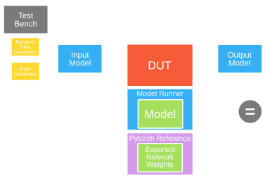

Chapter 4: Functional Verification

Throughout the development of each system verilog module, testbenches were simultaneously developed using the Cocotb Python library. The standardized layout as shown in Figure 4.1 involved driving both the DUT and the golden reference from the same input model, and collecting the outputs on the output model. This structure allows verification of not only the accuracy of the data, but the timing of the hardware as well. Then when designing the individual tests, all possible edge cases were simulated along with random inputs under different combinations of throughput to verify that the module is resilient to changes in backpressure and forward pressure. For the main RTL blocks, benchmarking the outputs directly against their PyTorch equivalents guaranteed accuracy while iterating and scaling towards a complete CNN.
Once all individual modules were unit tested, they were combined into the complete neural network. Several integration tests were executed using identical weights extracted from PyTorch, verifying strict agreement between the PyTorch CNN model and the hardware testbench. The test environment was then encapsulated within models of the deframer and classifier to confirm consistent behavior. Finally, the design was integrated with Alex Forencich's UART IP [1], and the simulation was driven using Cocotb's UART protocol.